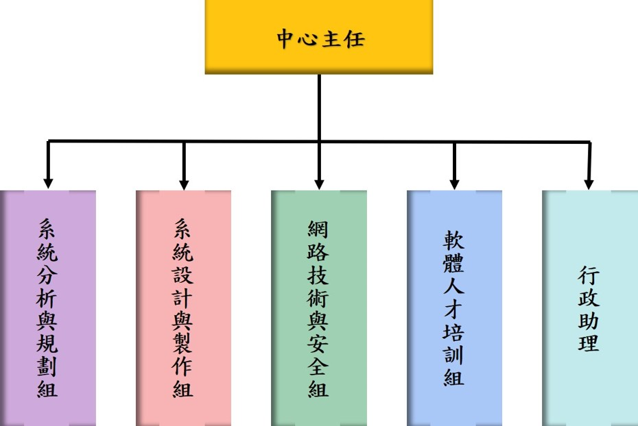

團隊成員
設中心主任一人，由校長聘任之，負責業務推展、執行與任務分配。業務之推展與執行，以專案計畫方式進行，必要時得聘請資訊管理系專任教師或具相關專長之專家學者共同主持。參與計畫人員均有其必要之權利與義務。本中心依任務特性分設系統分析與規劃組、系統設計與製作組、網路技術與安全組、軟體人才培訓組及行政助理一員，負責中心各相關業務之推展與執行。組職架構如下：

| 姓名 | 職稱 | 所屬系所 | 專長 | 工作職掌 |
|---|---|---|---|---|
| 龔旭陽 | 教授 | 屏科大資管系 | 分散式多媒體應用系統、行動計算與無線網際網路 |
|
| 童曉儒 | 教授 | 屏科大資管系 | 多媒體行動通訊、網際網路視訊串流、內容派送網路 | 負責虛擬實境、多媒體網際網路、分散式多媒體系統、無線與行動通訊等研究領域。 |
| 蔡玉娟 | 教授 | 屏科大資管系 | 資料探勘、影像處理技術、類神經網路、資訊管理 | 負責影像處理辨識和資料探勘等研究領域。 |
| 蔡展維 | 副教授 | 屏科大企管系 | 策略管理、組織理論、品牌管理 | 負責策略模式分析、策略管理與品牌管理等研究領域。 |
| 陳聰毅 | 助理教授 | 高科大電子系 | 自然語言處理、人工智慧 | 協助引進有關人工智慧之最新前瞻資訊技術。 |
| 潘建良 | 研究員 | 屏科大研究總中心 | 物聯網系統設計與開發 | 協助進行物聯網系統設計與研究計畫申請和事務推動。 |